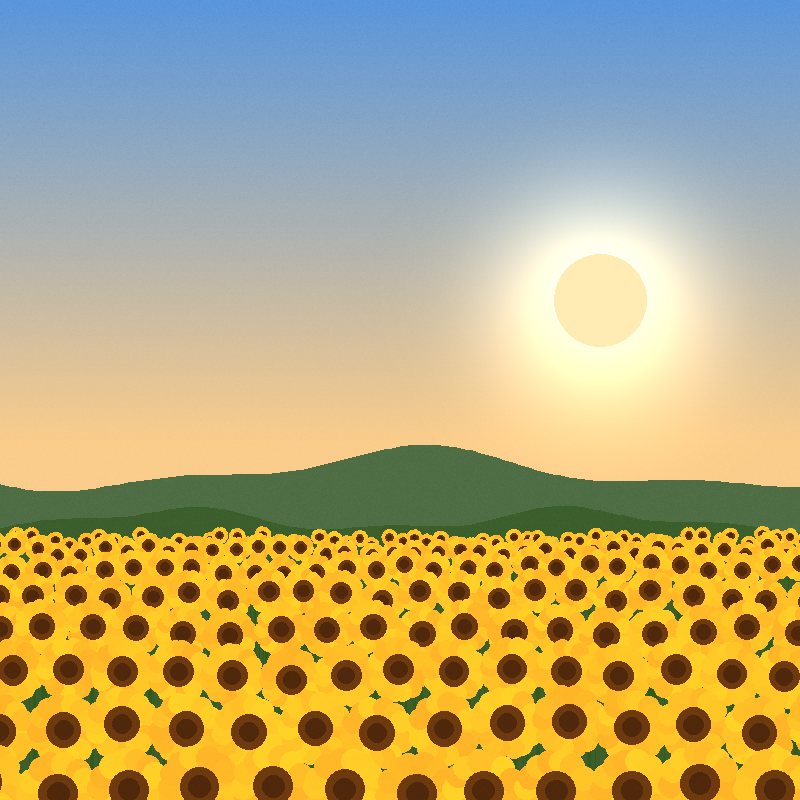
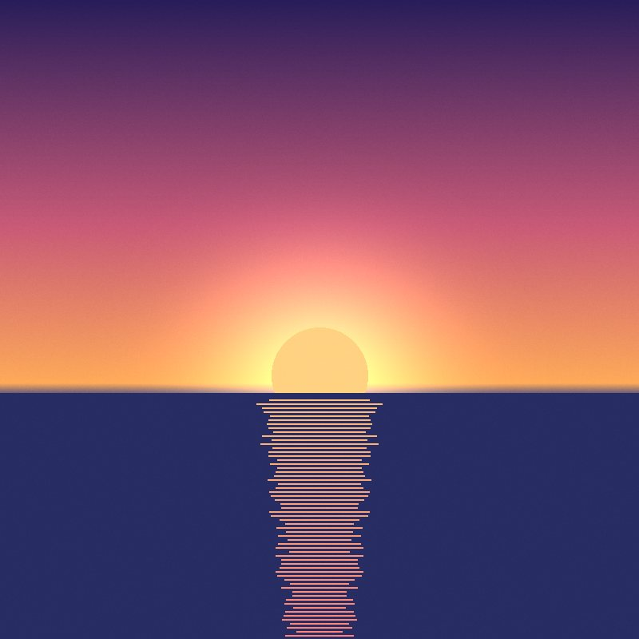
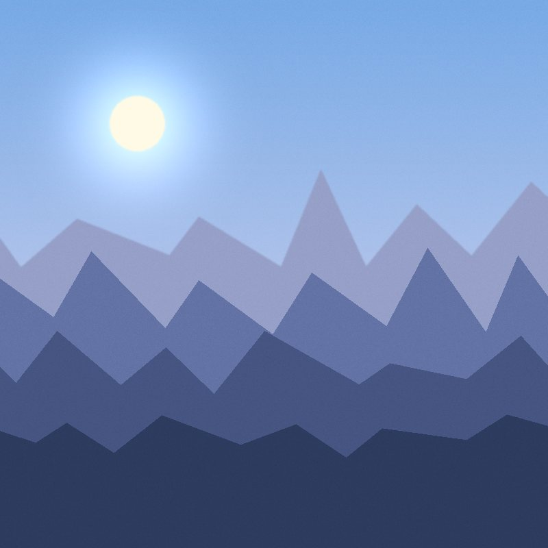
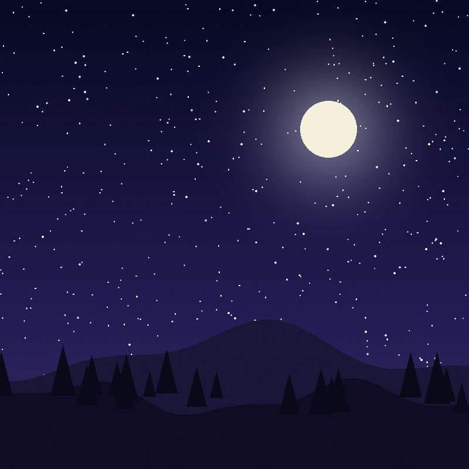
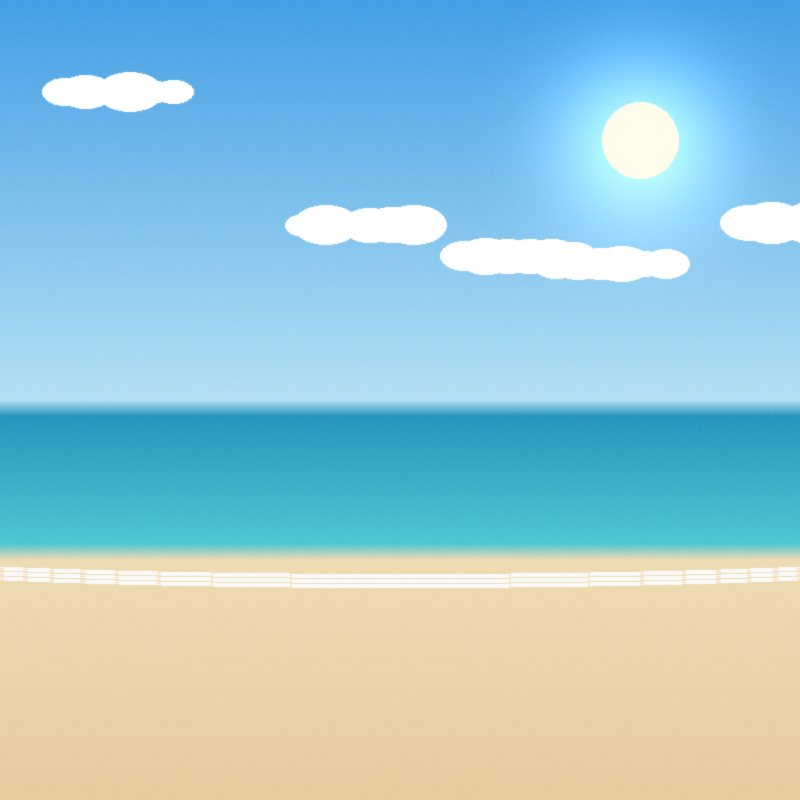
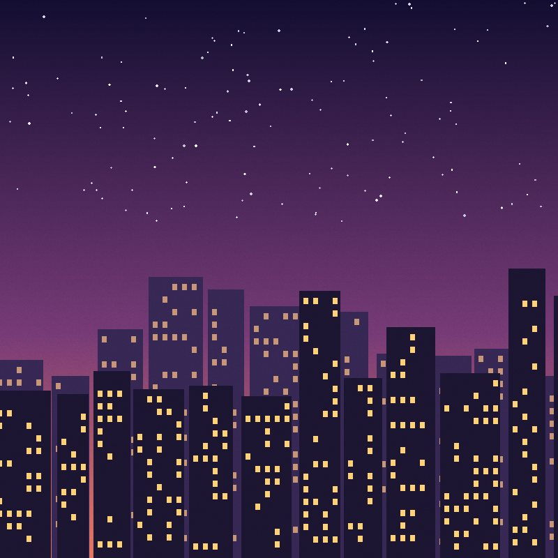
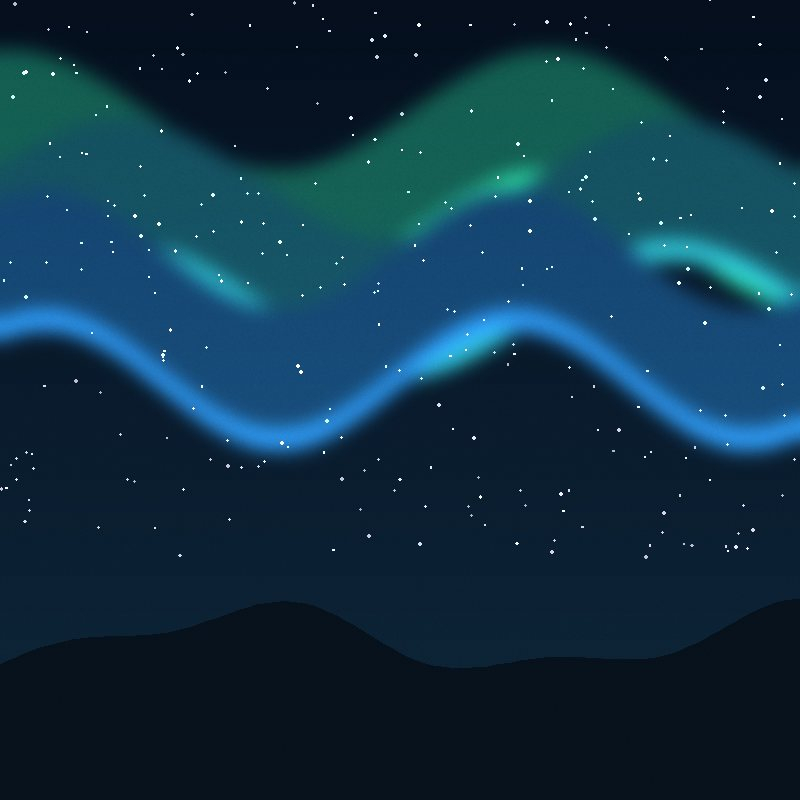
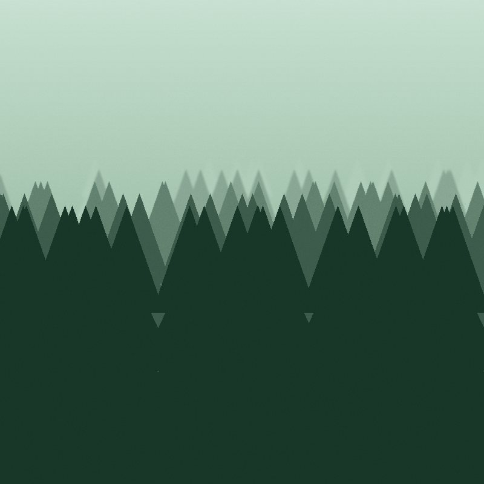
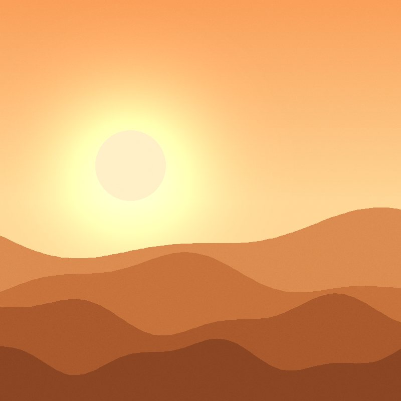
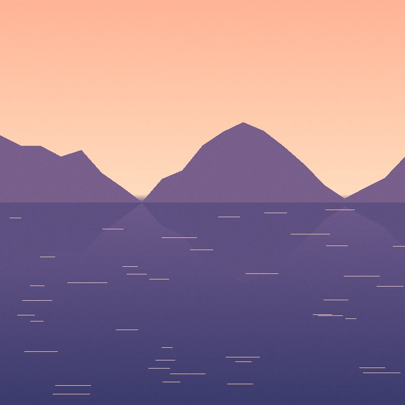
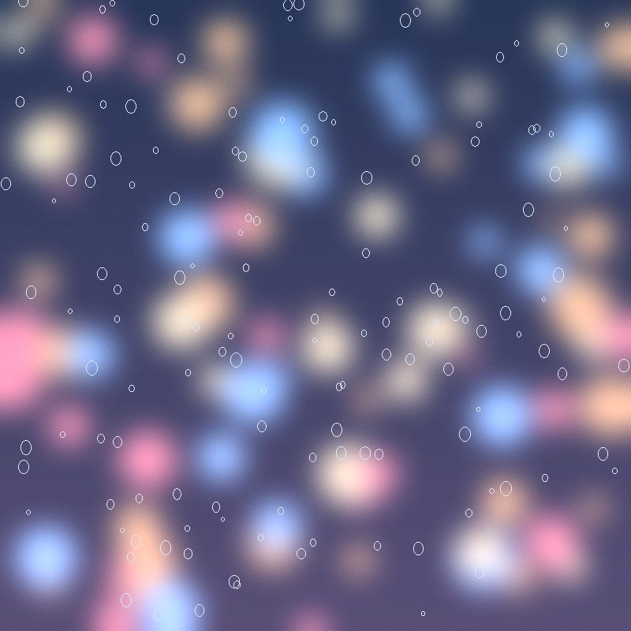
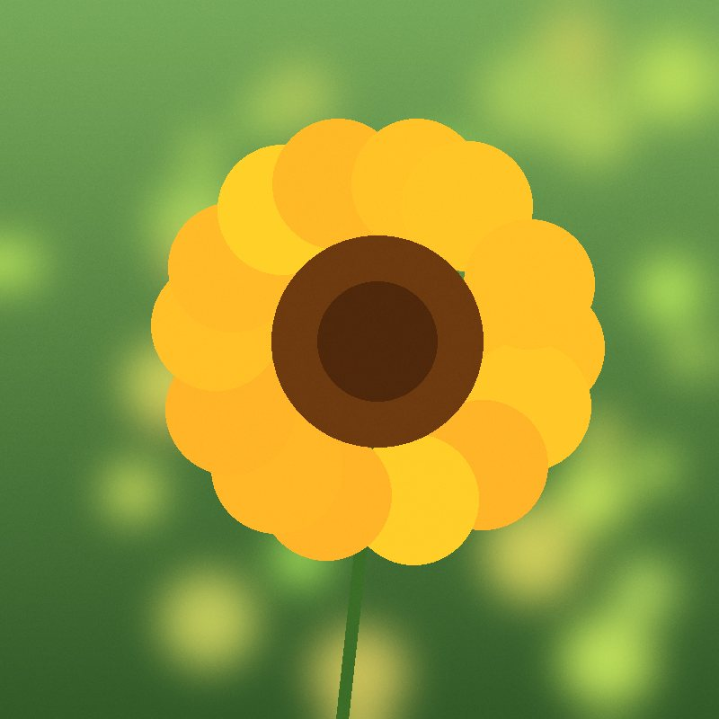
Hoy es 21 de septiembre, el día de regalar girasoles. Aquí tienes un jardín entero flotando entre estrellas, con cada recuerdo nuestro brillando como uno más 🌻💛












Sembrando girasoles…